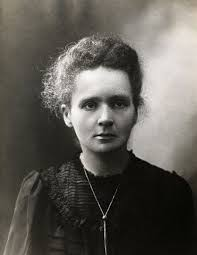
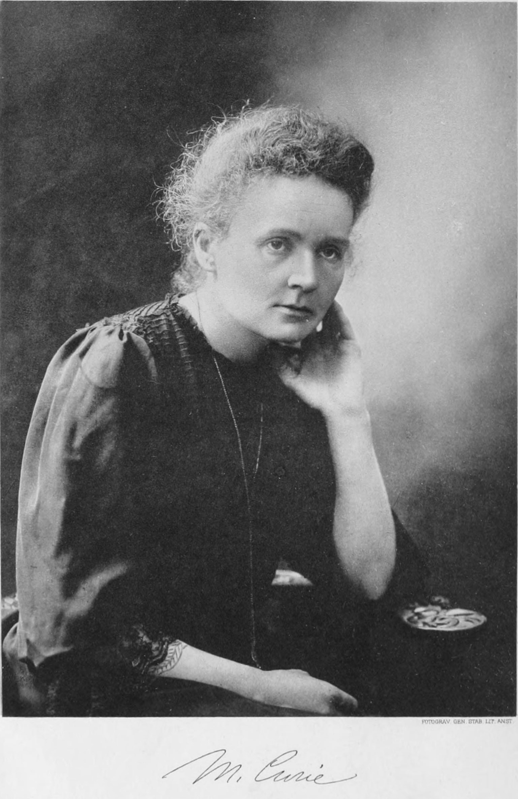

Marie Curie
Fotos
 
| Enumeración | Logro |
|---|---|
| 1º | Descubrimiento del polonio y el radio |
| 2º | Formulación del concepto de radiactividad |
| 3º | Primera persona en recibir dos Premios Nobel |
| 4º | Aplicación de la radiactividad en la medicina |
| 5º | Fundación del Instituto del Radio |